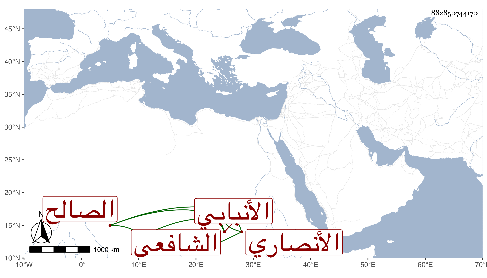

0902Sakhawi.DawLamic.ITO20230111-ara1.EIS1600.882850744170
Biography ID: 882850744170
1171
يوسف بن إسماعيل بن يوسف بن إسماعيل بن يوسف بن إسماعيل بن عمر بن سبع بن ثابت بن معمر بن أحمد بن محمد بن أحمد بن سالم بن قيس بن سعد بن عبادة هكذا قرأته بخطه وفيه نظر الجمال بن العماد الأنصاري الجزرجي الساعدي الأنبابي بفتح الهمزة فيما ضبطه شيخنا الشافعي الصالح بن الصالح ويعرف بالأنبابي . ولد سنة ستين ظنا وقرأ كما قال شيخنا على شيوخنا في الحديث والفقه والعربية والأصول كالعراقي والعز بن جماعة وأكثر جدا وكان أبوه ممن يعتقد في ناحيته ثم صار ابنه كذلك مع الخشوع والتعبد والإكثار من الحج والعبادة وملازمة الإشغال والاشتغال واتساع الأحوال إلى أن مات ، أجاز في استدعاء ابني محمد وكانت وفاته في شوال سنة ثلاث وعشرين وخلف مالا كثيرا جدا . ذكره شيخنا في إنبائه ومعجمه ، ومن شيوخه التقي البغدادي سمع عليه البخاري وتلا عليه بالسبع وابن الشيخة سمع عليه مسند أحمد والتنوخي سمع عليه جزء الأنصاري وجزء أبي الجهم وغيرهما وتفقه بالبلقيني وابن الملقن وحمل عنه شرحه للحاوي والأبناسي وأذنوا له بالإفتاء والتدريس وأخذ الحديث عن الزين العراقي والعربية والأصول عن العز ابن جماعة وذكره ابن قاضي شهبة في طبقاته وبه ختمها والمقريزي في عقوده .
